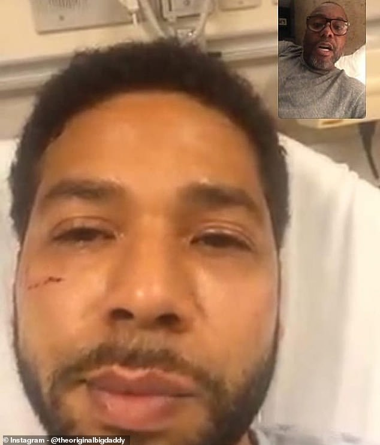
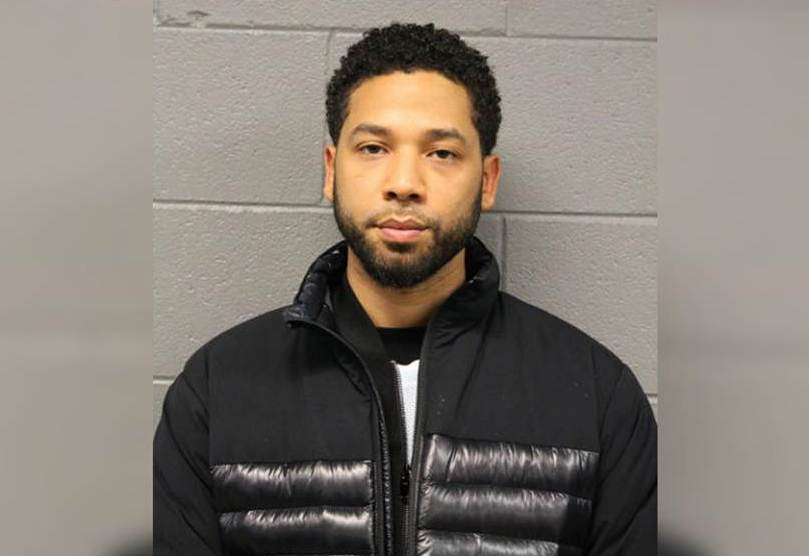

Actor Jussie Smollett, star of 20th Century Fox Television’s hit show “Empire”, lied to the media, his fans, and the rest of his faithfully misguided audience about a racially charged attack against him in Chicago last month. While the attack occurred weeks ago, it has only recently come to light how his story was false and the attack was staged, giving Fox an opportunity to address the revealed scandal.
The media originally bought his story about how he apparently received a letter threatening his life and was then attacked by two men screaming homophobic and racist insults wielding bleach and a noose while wearing MAGA hats.
Allegedly, Smollett created this event as a means of salary negotiation as he was unsatisfied with the $125,000 Fox had been paying him per episode. As this scandal continues to simmer as a hot topic of national debate, both the media and social media users have been ruthless in their criticisms against Smollett.
Not only did he gain traction and sympathy as a victim and hero, but as a political figurehead against the racist and homophobic attitudes that have become associated with Trump supporters, making a fool of his supporters for defending him giving Trump and his supporters a perfect example of a situation in which to lament how fake liberal news has become and how easily the media falls for stories that simply ‘fit their narrative’.
"Jussie Smollett took advantage of the pain and anger of racism to promote his career. I'm left hanging my head and asking why."
Tell Smollett what YOU think and TWEET him here!
Police have charged Smollett with a felony for filing a fake police report and claim that he paid two men $3,500 to attack him. While the actor’s lawyer and some supporters continue persisting that the attack did occur and that the police have unfairly charged him, the fact remains that Smollett has become too volatile of a public personality to allow him to continue appearing on screen and being associated with Fox Television’s brand. As a result, 20th Century Fox TV wisely made the decision to suspend Smollett’s role in the final two episodes of the show’s most recent season on Friday, February 22 and issued a relative apology to the public alongside their announcement.
20th Century Fox Television has made all the right decisions so far where communication and public relations are concerned in relation to Jussie Smollett.
Communication is the most vital part of successful PR, which makes it all the more compelling that Fox did not try to ignore the issue, lessen the significance of its impact, or attempt to justify their star’s actions and instead chose to address the crisis directly and honestly. Emotions are as viral as they are contagious, and the social media storm of memes and angry tweets that followed the public’s discovery of Smollett’s falsehoods were prime examples of the way surprise turned into outrage and then transformed into anger and bitterness towards the man.
These feelings surfaced on account of his petty dissatisfaction with such a high salary and the way he tried to fabricate a story based on sympathies consistent with racial discrimination, contributing to rather than diffusing detrimental attitudes towards similar civil rights issues.
The platform on which he garnered sympathy was the very platform that tore him apart when he was found out. As a result, it was essential for Fox to use those same media and Internet platforms to broadcast their response and decision to suspend the actor. In a statement released by the show’s executive producers, Fox Television admitted that "The events of the past few weeks have been incredibly emotional for all of us” and that Smollett had “been an important member of our 'Empire' family for the past five years and we care about him deeply."
“We understand the seriousness of this matter and we respect the legal process. We are evaluating the situation and we are considering our options.”
Tell Fox what YOU think and TWEET them here!
However, expanding beyond their personal feelings on the issue and addressing the facts of the situation, the statement proceeds to explain how the organization trusts the legal system to take care of these “disturbing” allegations, aware that any further comments on their part would be biased (or at least appear to be) in favor of their employee of 5 years. The announcement also clearly communicated Fox TV’s intentions in regard to consequences, as they “are aware of the effects of this process on the cast and crew members who work on our show and to avoid further disruption on set, we have decided to remove the role of Jamal from the final two episodes of the season”.
They were concise and honest about the PR crisis they were dealing with and chose to speak in a way that addressed both the media and the general public, directly answering the question of whether Smollett would face repercussions from the organization he was trying to con into paying him more.
That being said, Smollett’s character has not been written out of the show. Though any scenes starring the actor that had been meant to appear in the already-shot final episodes airing March 13 will be deleted, it is still uncertain whether his employment and role will be reinstated if the show is renewed for another season, which seems likely due to its high popularity.
The most important thing for Fox Television to do once news broke of the scandal was to handle the crisis on their hands, and their statement and suspension served as an ideal short term solution for the brand.